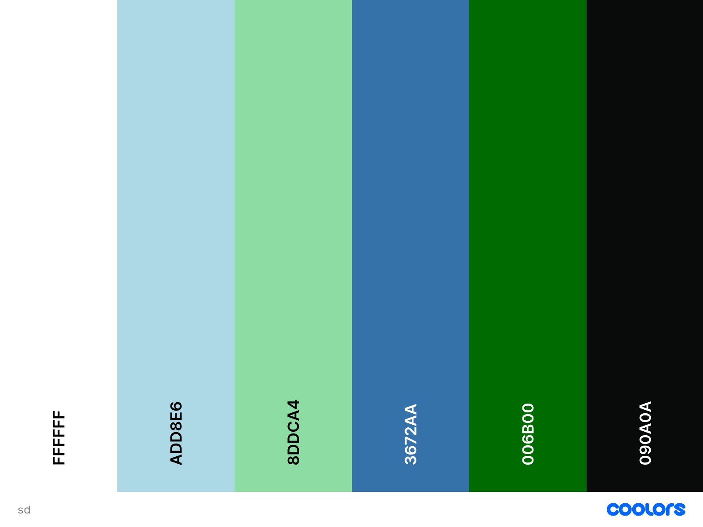

Color Scheme
The color scheme comes from colors often seen in nature. The hope is to give the site a more earthy vibe for those excited about being in nature.Link.
Color Uses
006B00 - This will be used for the Navbar and the Footer
8DDCA4 - This is used for the highlighted navbar options it is a secondary color for the navbar.
090A0A, FFFFFF - These are used for the text colors, depending on the situation.
ADD8E6, 3672AA - These will be used as underlays for photos and other elements that need attention drawn to them over the white background. The second one may not be used.
